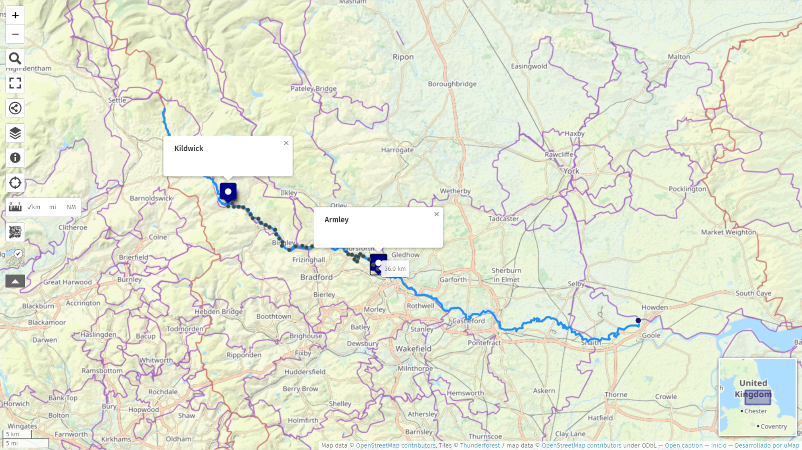
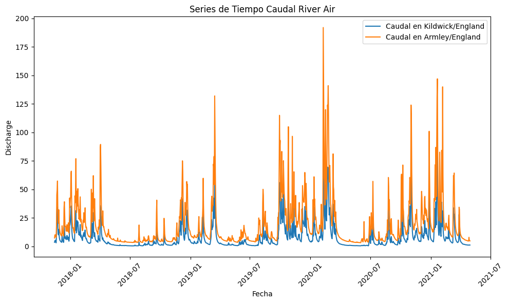

Tarea 1: Series Tiempo dataset#
Leer dataset#
Los datos fueron obtenidos de la biblioteca de Keggle: [https://www.kaggle.com/datasets/thomaswrightanderson/river-aire-discharge-time-series?resource=download]
from IPython.display import Image, display
# Ruta relativa a la imagen dentro de tu Jupyter Book
image_path = "C:/Users/FBA/OneDrive - Acesco/0. Personales/2. Profesional/20240416 - Maestria en Analítica de Datos/20240919 Series de Tiempo/jbook_ST20240919/docs/Air river.png"
# Mostrar la imagen
display(Image(filename=image_path))

Origen: https://umap.openstreetmap.fr/es/map/aire_378149#10/53.8752/-1.5298
import pandas as pd
# Ruta al archivo .csv
csv_file_path = "C:/Users/FBA/OneDrive - Acesco/0. Personales/2. Profesional/20240416 - Maestria en Analítica de Datos/20240919 Series de Tiempo/Tarea 1/Parte 1/river_aire_discharge_timeseries.csv"
# Lee el archivo .csv en un DataFrame
df = pd.read_csv(csv_file_path)
# Muestra las primeras filas del DataFrame
print(df.head())
Date SF_absolute_humidity SF_relative_humidity \
0 14/11/2017 8.3 86.2
1 15/11/2017 7.6 87.0
2 16/11/2017 6.4 78.8
3 17/11/2017 5.4 77.3
4 18/11/2017 5.6 74.0
SF_mean_air_temperature SF_atmospheric_pressure SF_potential_evaporation \
0 10.4 1013.1 0.4
1 8.8 1016.3 0.4
2 7.7 1014.7 0.6
3 5.6 1019.7 0.6
4 6.5 1013.1 0.7
SF_net_radiation SF_volumetric_water_content SF_soil_temperature \
0 0.8 32.4 6.9
1 1.1 31.3 8.1
2 -2.7 31.8 7.1
3 -2.3 32.5 4.9
4 -2.3 30.4 5.2
SF_wind_speed ... river_level_snaygill river_level_kildwick \
0 2.9 ... 0.417 0.366
1 1.6 ... 0.695 0.496
2 3.2 ... 0.715 0.497
3 2.9 ... 0.631 0.476
4 3.4 ... 0.534 0.430
river_level_kirkstall headingley_precipitation malham_precipitation \
0 1.514 1.4 9.6
1 1.545 0.0 3.8
2 1.544 0.4 1.6
3 1.562 0.0 0.8
4 1.536 0.0 0.0
skipton_snaygill_precipitation farnley_hall_precipitation \
0 0.8 0.8
1 0.8 0.0
2 2.4 0.2
3 0.4 0.0
4 0.0 0.0
embsay_precipitation silsden_precipitation lower_laithe_precipitation
0 6.6 1.2 1.0
1 2.2 1.2 1.4
2 1.6 1.0 2.0
3 0.2 0.4 0.2
4 0.0 0.0 0.2
[5 rows x 24 columns]
Gráficos#
import pandas as pd
import matplotlib.pyplot as plt
df = pd.read_csv(csv_file_path)
# Convertir la columna de fechas al formato de fecha
df['Date'] = pd.to_datetime(df['Date'], format='%d/%m/%Y')
# Configurar la columna 'Date' como índice
df.set_index('Date', inplace=True)
# Crear una figura y ejes para varias series de tiempo
fig, ax = plt.subplots(figsize=(10, 6))
# Graficar series de tiempo
ax.plot(df.index, df['discharge_kildwick'], label='Caudal en Kildwick/England')
ax.plot(df.index, df['discharge_armley'], label='Caudal en Armley/England')
# Personalizar gráfico
ax.set_title('Series de Tiempo Caudal River Air')
ax.set_xlabel('Fecha')
ax.set_ylabel('Discharge')
ax.legend()
# Mostrar gráfico
plt.xticks(rotation=45)
plt.tight_layout()
plt.show()

Verificación de datos faltantes#
data_us=df[['discharge_kildwick']].copy()
data_us.loc[:,'discharge_armley']=df['discharge_armley']
data_us.set_index(df.index,inplace=True)
data_us.head()
| discharge_kildwick | discharge_armley | |
|---|---|---|
| Date | ||
| 2017-11-14 | 3.69 | 7.43 |
| 2017-11-15 | 4.56 | 9.66 |
| 2017-11-16 | 5.45 | 10.30 |
| 2017-11-17 | 4.19 | 9.69 |
| 2017-11-18 | 3.55 | 8.37 |
data_us.isna().sum()
discharge_kildwick 0
discharge_armley 0
dtype: int64
data_us.isnull().sum()
discharge_kildwick 0
discharge_armley 0
dtype: int64
Validación de la frecuencia muestral#
#frecuencia de datos
data_us.index = pd.to_datetime(data_us.index, format='%Y-%m-%d')
frecuencia = pd.infer_freq(data_us.index)
print("Frecuencia: ", frecuencia)
Frecuencia: D
Interpretación inicial#
En general el caudal de un río dependerá signficativamente de la localidad en donde éste se mida. Sin embargo las fluctuaciones del mismo serán proporcionales en cada zona.
De las interpretaciones preliminales que podemos observar en este tipo de datos de series temporales, es la estacionalidad y movimientos ciclicos de las variables medidas que se repiten con una regularidad, claramente marcada por los periodos de incremento y disminución de la pluviosidad en cada estación.
Particularmente, los datos observados corresponden a un rio en inglaterrra donde los bajos caudales concuerdan con las estaciones del Verano y otoño entre los meses de abril a noviembre. Los picos en los caudales corresponden a las estaciones de invierno y primavera, la cual se dá entre los meses de diciembre a marzo.
https://www.npl.co.uk/resources/q-a/when-do-the-four-seasons-begin